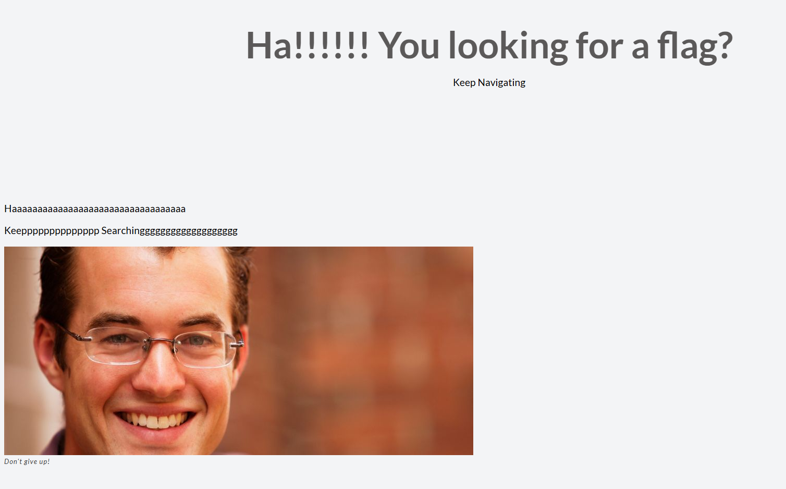

todo: search srccode, check srccode, sql injection, command injection, /robots.txt, burpsuite
cool websites: hacktricks, what is HTTP?, documentation
the very first web exploitation problem, the hints are using a "web inspector" and the flag may be decoded
sure enough, using burpsuite we would get the flag easily

the idea is using unminify to get the flag

a basic sql injection, setting the password to ' or 1=1;-- solve the challenge because it'd be password = '' AND username = '' or 1=1;--'


the hint is "any redirections?", something must be in the networking, using burpsuite we get the flag divided by 2 parts


check the source code we see a link, and since the hint is "folders", playing around with the url solve the problem


a really sad challenge, just remember to search the whole source code first

check the /robots.txt and get the hint, change the url

it seems like the web return the file if we have the file path, so we navigate to the root directory first and access the flag

a JSON Web Token related problem which can be solved by using "none attack", change the jwt's alg to "none" and user to "admin", delete the signature part and send it back to the sever
i spent 3 fucking hours on this because i missed the dot "." in the last of the payload
some very cool websites about JWT:
basic cover ways to attack JWT decoder
use command injection we get the flag

we find in the source code part 1 and 2 of the flag, open /robots.txt file give us part 3 of the flag

its a apache sever and we should "access" the flag, after quite a time searching google i found that apache sever have a .htaccess file
an .htaccess file is used for an Apache web server as a way to configure the details of your website without altering the server configuration files. This file begins with a period to signify that it’s hidden within the folder.

due to the hint of using "mac" and "store", we check the .DS_Store file and got the final part of the flag

the first hint is "people using PicoBrowser", i tried to add Referer to the original website but it didn't work, then i try to change agent-user to PicoBrowser, it did work.

this time it must be changing the Referer, change it to the first url

change the date to 2018, how to change the date

The DNT (Do Not Track) request header indicates the user's tracking preference. It lets users indicate whether they would prefer privacy rather than personalized content.
add "DNT: 1" led us to the next page

one way to change the IP address is to add "X-Forwarded-For" with the IP address, find a sweden ip address and proccess

"Accept-Language: sv-SE" and we solve the challenge